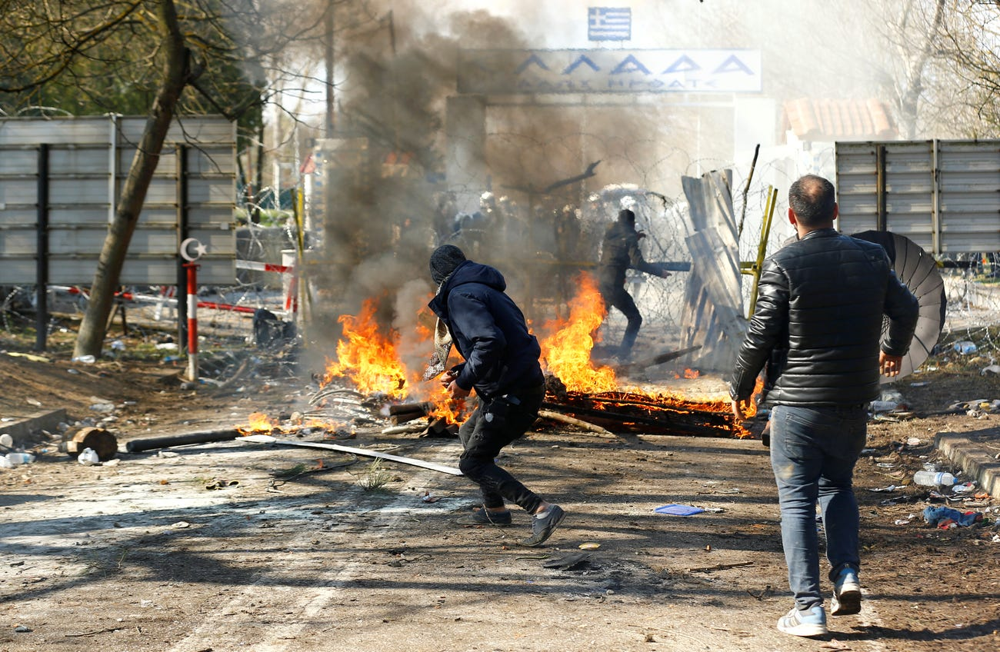

Migrants clash with Greek police

2020/03/05 foreignpolicy.com
Europe's Morality Is Dying at the Greek Border
by Paul Hockenos
This week, Greece’s northern border with Turkey and the Bulgarian-Turkish borderlands, too, have witnessed brutal, violent scenes reminiscent of war zones. Thousands of desperate migrants fleeing war zones—including mothers with babies in their arms—are storming barbed-wire fences to get into European Union territory to apply for political asylum, while Greek security forces in anti-riot gear beat them back and shoot rubber bullets and billowing clouds of tear gas at them. On the easternmost Greek islands, such as Lesbos, the Greek coast guard and navy have been turning away dinghies of half-frozen, frightened refugees. More than 32,000 migrants have been arrested at the Greek land border.
Greece has suspended asylum applications for a month and is deporting all migrants attempting to enter Greece “illegally,” although The United Nations refugee agency has said there is no legal basis for suspending asylum decisions. Two people have reportedly died so far, including a child in a capsized boat. Greek Prime Minister Kyriakos Mitsotakis is making no apologies for such treatment: “We stopped and protected our borders, which are also the EU’s borders,” a government spokesperson said on March 1. EU Commission President Ursula von der Leyen, who visited Greece yesterday to show solidarity with the Athens government, praised Greece’s role as “Europe’s shield” and promised Greece 700 million euros ($780 million) more in support to bolster border security. “The events of 2015 must not be repeated,” said David McAllister, head of the European Parliament’s Committee on Foreign Affairs, referring to the influx of 1.3 million asylum applicants into the European Union that year.
The EU is correct to intuit that the legacy of the events of 2015 are in play at the Greek border. In the earlier crisis, the continent managed, not without difficulty, to earn a reputation for humanitarianism in the eyes of the world, while buying time to address the root causes of mass migration from the Middle East and to prepare better for its consequences. Europe did neither.
To be sure, there is no excuse for Turkish President Recep Tayyip Erdogan’s brute attempts to blackmail the EU. He has made good on his cynical threat to open Turkey’s borders to refugees fleeing westward to Europe should Turkey not receive military support from NATO for his army’s operations in Syria. He also demanded more money for the refugee camps Turkey agreed to host as part of the 2016 deal he struck with Europe to stem migrant flows from the Middle East.
NATO is understandably loath to bend to Erdogan’s attempts at geopolitical coercion. It is baffling, however, that the EU, for its part, was so unprepared for a renewed migrant crisis and now finds itself resorting to martial coercion of its own at its borders. From the inception of the 2016 agreement with Turkey, it was obvious that it was not a long-term solution but a maneuver to buy time to design a common EU refugee policy.
Crafted largely by the German government under Chancellor Angela Merkel, the 2016 deal promised Turkey 6 billion euros ($6.7 billion) in aid to Turkey for taking in refugees and accelerated negotiations on Turkish EU membership, visa-free travel for Turks to the EU (upon fulfilling various conditions), and continued progress on an EU-Turkey customs union. As for Greece, it would return to Turkey those refugees that attempted to cross the Aegean and make an “illegal” entry; for every such “irregular migrant” sent back to Turkey, the EU in turn would resettle one refugee from the Turkish camps. These people would be distributed across Europe according to a quota system.
The accord, signed in March 2016, succeeded at slashing refugee numbers applying for asylum in the EU to a trickle. More than 1 million refugees arrived in Europe in 2015, but by 2017 the total dropped to around 200,000, and further to 150,000 in 2018. In the first half of 2019, about 40,000 arrivals were recorded—just 37 percent of those during the same period in 2018. The number crossing—and dying in—the Aegean Sea fell off dramatically, from a high of 10,000 arrivals a day in 2015 to fewer than 100. (Since 2019, the numbers coming from Turkey to Greece had been creeping higher.)
But Europe never came close to upholding its end of the bargain. On several counts, Merkel should have known she was overpromising.
The EU never loosened visa regulations for Turks; Greece, as a result of chaotic public administration, managed to send fewer than 2,000 migrants back to Turkey, instead leaving most of them to dwell for months and even years in thrown-together camps on islands such as Lesbos. Meanwhile, the volume of the financial aid for the refugee camps was always disputed: The EU claimed it had transferred the two installments of 3 billion euros to Turkey, but Ankara insisted that it had received about half that amount. (The camps set up by Turkey didn’t live up to international standards, although there the EU was happy to look the other way.)
The EU’s most egregious failure, however, was that it never accepted a significant number of refugees from Turkey. In total, since 2016, the EU has taken around 26,500 Syrians living in Turkey, almost all of them landing in Germany, the Netherlands, France, and Finland. This, however, was far less than the 72,000 “cap” mentioned in the deal—itself a paltry number compared with the enormous burden shouldered by Turkey.
Nevertheless, in the years since the deal’s signing, the EU has failed completely to devise a common migration policy for the bloc to manage the expected long-term uptick in migration—or even emergency plans should there be a sudden influx of refugees of the sort we’re seeing now.
What’s clear is that Plan A is now in the garbage can and there is no Plan B. EU leaders may blame the lack of policy on the Central Europeans, who indeed have objected to a quota distribution plan, but they weren’t the only ones plotting against it. Meanwhile, even proponents of the quota plan are now refusing to admit the number of asylum seekers they claim to have been prepared to accept under a common strategy. In Germany, conservatives in Merkel’s own Christian Democratic Union party never ceased agitating since 2017 for a hard cap of refugees of 200,000 per year. And how many did Germany actually take? In 2018, the country processed 185,853 applicants, of which just over 50 percent received “protected status,” namely political asylum or temporary refugee status. Last year, just 146,619 applied for political protection.
“The EU is now paying the price for not having a functioning European migration policy even after years of negotiations,” claimed German newsweekly Der Spiegel. “The EU countries left Greece alone with the arriving refugees. A moderate increase in their number was enough to bring the Greek reception system to the brink of collapse in July [2019].” What we’re experiencing now is the collapse, long predicted.
Amnesty International, Germany’s churches, and Germany’s left-wing parties, including the Social Democrats who are part of the governing coalition, have strongly condemned the Greek authorities’ suspension of the right of refugees to apply for asylum at all EU borders. But it is time to take more much more decisive action: The EU’s nonborder countries must finally step in to assist Greece, as well as Spain, Italy, and Bulgaria, by helping process the refugees, rather than turning them away at border fortifications. In Germany, the opposition Greens have sensibly called for Germany to immediately take in 5,000 women, children, and elderly stranded on the Greek islands. That seems the least that can be done.
A broader coalition of willing European states should be formed to relieve the current crisis. There is ample evidence that ordinary Germans are prepared to accept a new influx of refugees, even if their own national government is hesitant. The German organization Seebrücke, which seeks to protect refugees, says that it has been in contact with 140 municipalities and cities that are together willing to take in about 10,000 to 20,000 refugees. According to Liza Pflaum of Seebrücke, the organization has been fighting in German courts for a year and a half for these towns to receive refugees, even as the federal interior ministry, run by conservative Horst Seehofer, refuses to give a green light. (The political asylum process is a prerogative of the federal government.) Merkel has not put Seehofer under any pressure to acquiesce. “We have empty beds that were used in 2015 and 2016 when German communities voluntarily found places for refugees,” said Pflaum.
The EU has prevaricated and shamed on migration, and now a crisis has arrived at its shores that was foreseeable in every way. Merkel’s only response has been to offer Erdogan more money, in hopes of buying more time to uncertain end. One might sympathize with her attempts to salvage what’s left of her legacy on migration. But the EU has the responsibility of facing the crisis squarely: The choice now is whether Europe wants to earn its reputation for humanitarianism, or forfeit it entirely.